Product options, cart state, and a connected purchase flow
Team project · 2 weeks · 3 frontend + 2 backend developers
Overview and role
LIKE is a two-week team project recreating a Nike-style ecommerce experience with three frontend and two backend developers. I implemented navigation, product details, reviews, cart interfaces, and the purchase flow connected to the backend. The team deployed the frontend and backend on AWS.
Data-driven navigation and product options
Navigation menus and submenus reflect category data. Product pages use router path parameters to display the selected product, and update the maximum quantity when a size is chosen.
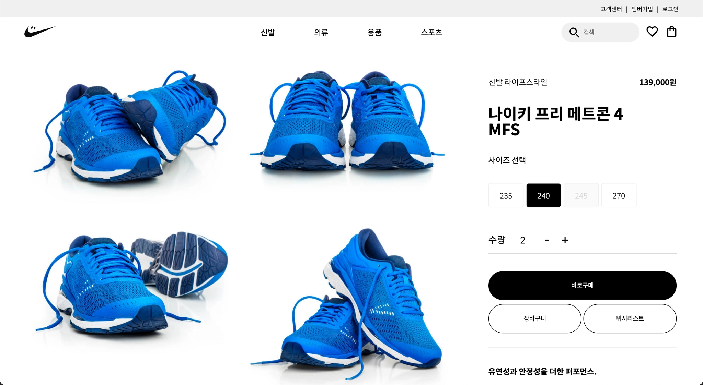
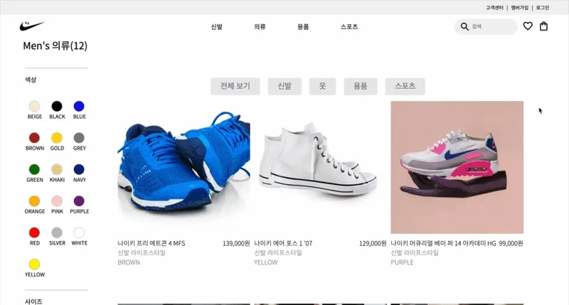
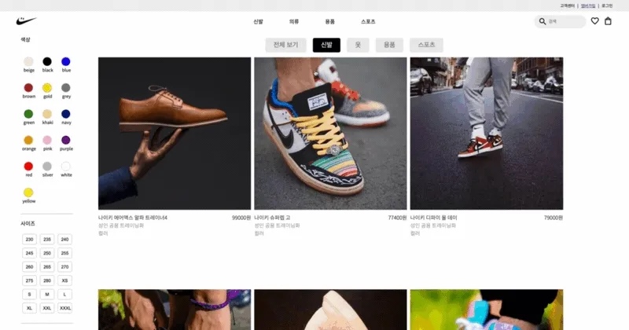
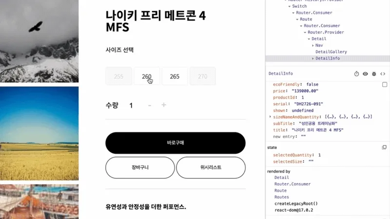
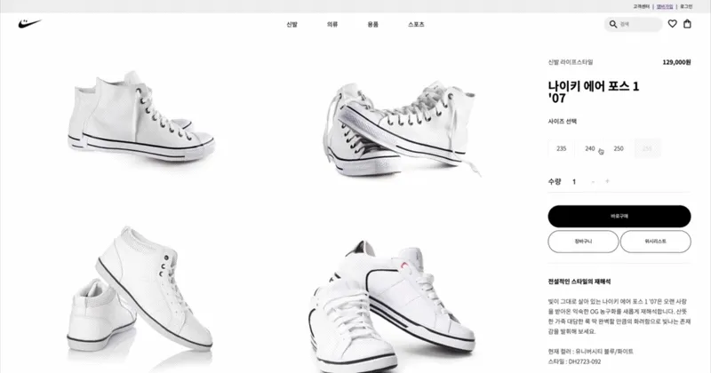
The product detail page also displays review lists and star ratings through an expandable review interface.
From mini cart to order history
I connected the mini cart, shopping cart, order history, and purchase flow to backend endpoints using GET, POST, and DELETE requests.
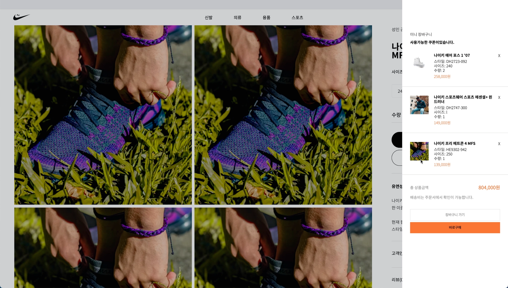
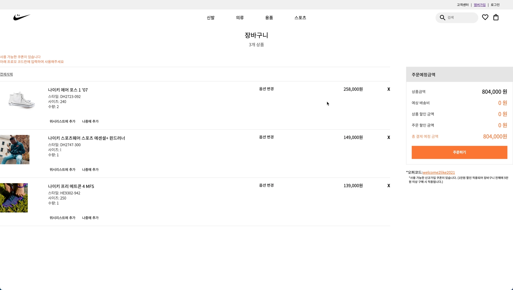
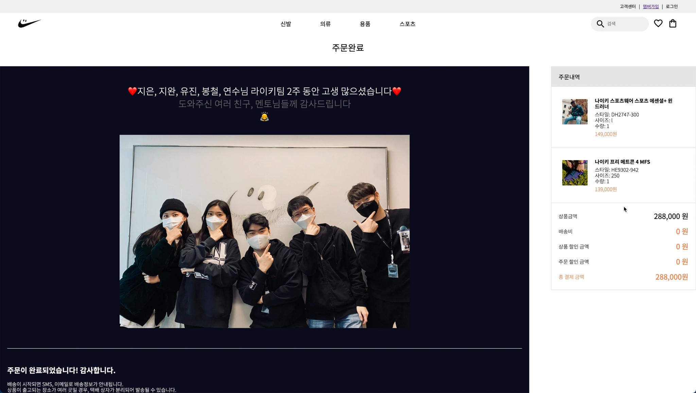
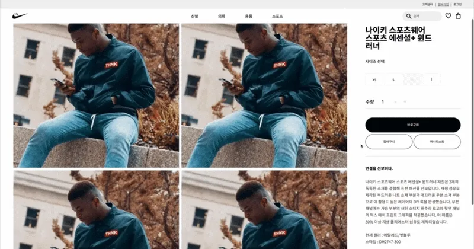
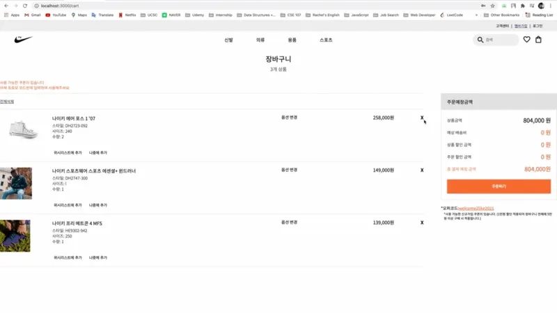
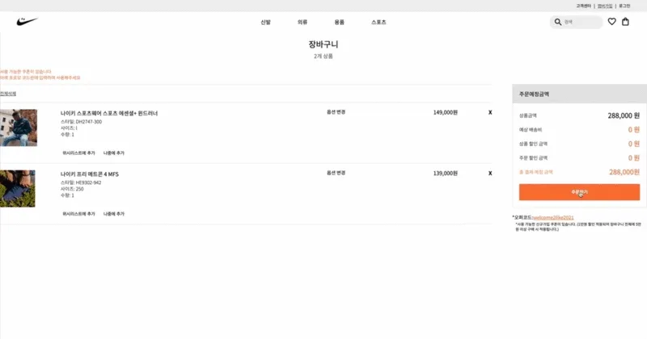
Tools and technologies
React · JavaScript · Sass · HTML5 · AWS S3
Git · GitHub · Slack · Trello · Postman